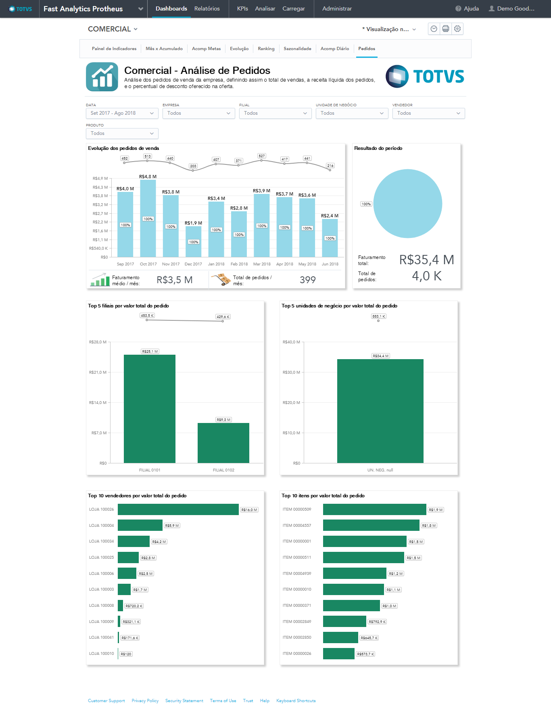

Fast Analytics
Qual a sua estratégia de dados?
Descomplicando sua Implantação
Desenvolvido por fluig Academy
Rodrigo Becker
Full Stack Developer | fluig Academy Expert
"Sou apaixonado por tecnologia e negócios e por isso estou aqui! Meu objetivo é ensiná-los como implementar o Fast Analytics um produto de Business Analytics para potencializar suas estratégias de forma assertiva e eficiente. "


Objetivo
Neste treinamento vamos capacitá-lo a no Fast Analytics, o produto extrai os dados dos diversos módulos do Protheus e os envia para a plataforma GoodData. O foco é implementar os indicadores da oferta Fast Analytics, proporcionando a tomada de decisão de informações relevantes para seu negócio.
Vamos falar sobre...
# Conceitos de BI vs BA
# E o Big Data?
# As dores do mercado
# Quais benefícios
# A Empresa GoodData
# A Módulo de Comercialização TOTVS
# O ERP Protheus e sua arquitetura
# Módulos Homologados
# A Empresa GoodData
# Como Implatar?
# Etapas de Implantação
BI vs BA
| Business Intelligence (BI) | Business Analytics(BA) | |
|---|---|---|
| Coleta, analisa e monitora
compartilhando as informações |
Coleta e analisa dados,utilizando análises
preditivas por meio de algoritmos analíticos |
|
| facilita a interpretação dos dados,
identificando novas oportunidades de negócio |
É possível se antecipar a diversas situações e
se preparar com maior assertividade para cenários futuros |
|
| Garantir a eficiência operacional | Impulsiona a evolução do negócio | |
| Melhora a operação, aumenta eficiência e atingimento de metas | Analisa a empresa, o mercado e a indústria | |
| Otimiza o presente para o sucesso atual | Analisa o presente para preparar negócios para o futuro. |
E o Big Data ??
BIG Data
{Volume de Dados + BI + BA = BIG DATA ANALYTICS }
As Dores do Mercado
# Falta de Informação
# Quantidade Execessiva de Planilhas! =(
# Informações Distribuidas
# Problemas na tomada de decisão
# A Empresa GoodData
Benefícios
# Aumento de Margens / Crescimento de Receitas
# Redução de Riscos
# Redução de Custos
# Maior Controle e Expansão da Operação
GoodData ??
Conhecendo um pouco mais!

Sediada em São Francisco, nos EUA, a GoodData possuí uma plataforma de Business Intelligence na nuvem com mais de 40 mil clientes em todo o mundo. A parceria TOTVS e GoodData iniciou em 2014, onde a TOTVS possuí exclusividade de comercialização da plataforma em toda América Latina, com mais de 800 clientes.
- +170 mil Usuários Satisfeitos
- 99,5% mil SLA de disponibilidade
- + 3 milhões de integrações de dados por semana
(BI + CLOUD + SAAS) = PLATAFORMA GOODDATA
Simplificando sua Arquitetura =)
O que é um projeto?
É o contexto no qual será inserido todas as informações do cliente na plataforma,gerando assim sua visão analítica.
Comercialização
|
|
GoodData | TOTVS Fast Analytics | fluig Analytics |
|---|---|---|---|
|
|
Se tiver o ERP TOTVS TSA está incluso | Integração nativa com Banco de dados dos ERP | Uso exclusivo dos dados do fluig |
|
|
Licenças pelo número de usuários e consumo de espaço de projetos | Dashboard e Relatórios customizados por segmentos | Liberação de dois projetos |
|
|
Altera modelo para qualquer sistema | Não altera modelo de dados | Não altera modelo de dados |
Fast Analytics
Protheus
O fast Analytics é um subproduto da plataforma GoodData
A vantagem do fast é sua rápida implantação, permitindo o que cliente já tenha seus dados contruídos em um conjunto de visualizações sem muito esforço.
Para cada ERP existe um FAST específico que irá realizar a extração dos dados conforme as particularidades da base de dados.
Arquitetura
PROTHEUS
O ERP protheus como sabemos é um dos produtos da TOTVS e que possui uma diversidade de frentes de atuação para o seu négocio, os chamados Módulos. O Fast Analytics veio justamente para sanar a dor do BI no ERP, permitindo trazer esta visão analítica.
E para isto precisamos entender um pouco da sua configuração...
O que é um Patch??
No Protheus, o seu funcionamento "core" roda por meio de um .RPO, ou seja um arquivo que determina todas as configurações e funcionamento do ERP, e quando precisamos aplicar determinada atualizações seja no protheus ou no seus módulos precisamos de um PATCH, esse patch modifica as configurações do ERP, atualizando e adicionando melhororias e também novas funcionalidades.
Por Onde começar??
1º ETAPA
Abertura de Chamado ao suporte.gd@totvs.com.br
Neste email deve conter as seguintes informações:
- TCODE (Codigo do cliente)
- Nome do Cliente
- Proposta Comercial assinada da Contratação do Fast Analytics
Essa solicitação pode partir das seguintes entidades: -> CP / -> CLIENTE / -> ANALISTA
2º Etapa
Retorno da solicitação do suporte GD
Neste email deve conter as seguintes informações:
- Convite para o projeto
- Arquivo *.ZIP com do BaInstaller e o Extrator Agent*
3º ETAPA
Aplicando o Patch BaInstaller
Nesta etapa, o cliente deverá aplicar o patch em seu ambiente, através do TDS (Totvs Developer Studio).
É importante ressaltar a utilização de ambientes de Homologação | Produção
4º ETAPA
Trabalhando com o Extrator AGENT (TOTVS)
Nesta etapa, voçê deverá configurar o pacote do agent para que seja feita toda a extração da massa de dados do ERP PROTHEUS
É importante ressaltar que o Agent é uma classe java desenvolvida especificamente para tratar a extração e envio dos dados locais para a nuvem.
Configurando o Agent
O que é o arquivo [my].properties?
No arquivo temos os parâmetros que deveremos alimentar de acordo com as informações do projeto como também end-point do banco de dados do ERP de onde ocorrerá a extração de dados.
Parametrizando
################################################
### Parâmetros obrigatórios do Agent ###
################################################
# Credenciais
gdc.username=rodrigo.more@totvs.com
gdc.password=p@ssw0rd
# Pasta onde o arquivo zip será adicionado.
gdc.upload_url=https://na1-di.gooddata.com/project-uploads/rtt4xrfpfz6x4t4x65b0m4hg2st6tssd/today/
# Nome do arquivo zip.
gdc.upload_archive=PROTHEUS.zip
# Parâmetro responsável por verificar se será utilizado criptografia de senhas.
gdc.crypto=FALSE
# Backup
gdc.backup=TRUE
# Configuração do caminho e job de ETL.
gdc.etl.process_url=https://analytics.totvs.com.br/gdc/projects/rtt4xrfpfz6x4t4x65b0m4hg2st6tssd/dataload/processes/8b3ffe6e-f9cc-4201-9399-02b34896733d/
gdc.etl.graph=Protheus/graph/_Main.grf
################################################
### Parametros específicos do FAST Analytics ###
################################################
# Configuração do modo de carga do ETL (FullLoad / Incremental):
# gdc.etl.param.LOAD_MODE_FCT - Define o modo de carga dos datasets de fato.
# gdc.etl.param.LOAD_MODE_DIM - Define o modo de carga dos datasets de dimens�o.
# POSS�VEIS VALORES: FULL_LOAD
# INCREMENTAL
gdc.etl.param.LOAD_MODE_FCT=FULL_LOAD
gdc.etl.param.LOAD_MODE_DIM=FULL_LOAD
################################################
### Configuração para leitura de pastas ###
################################################
#Diretório que o Agent irá ler os arquivos.
#filesystem.input_dir=Dados
#Extensões válidas de arquivos.
#filesystem.wildcard=*.*
################################################
### Configuração de conexão SQLServer ###
################################################
jdbc.driver_path=jdbc/sqljdbc4.jar
jdbc.driver=com.microsoft.sqlserver.jdbc.SQLServerDriver
jdbc.url=jdbc:sqlserver://SPON010108647:1433;DatabaseName=P12117MNT
jdbc.username=sa
jdbc.password=totvs@1234
param.START_DATE=19800101
param.FINAL_DATE=20180507
param.EXTRACTION_DATE='20180507'
################################################
### Configuração de conexão Oracle ###
################################################
#jdbc.driver_path=jdbc/ojdbc6.jar
#jdbc.driver=oracle.jdbc.driver.OracleDriver
#jdbc.url=dbc:oracle:thin:@::
#jdbc.username=
#jdbc.password=
#param.START_DATE=ADD_MONTHS(SYSDATE, -3)
#param.FINAL_DATE=SYSDATE
#param.EXTRACTION_DATE='20180507'
################################################
### Exemplos de conexão c/ banco de dados ###
################################################
# Exemplos de Drivers
#
# IBM DB2
# jdbc.url=jdbc:db2://:/
# jdbc.driver=com.ibm.db2.jdbc.app.DB2Driver
#
# Oracle Thin
# jdbc.url=dbc:oracle:thin:@::
# jdbc.driver=oracle.jdbc.driver.OracleDriver
#
# PostgreSQL (v7.0 and later)
# jdbc.url=jdbc:postgresql://:/
# jdbc.driver=org.postgresql.Driver
#
# Microsoft SQL Server 2000 (Microsoft Driver)
# jdbc.url=jdbc:microsoft:sqlserver://;DatabaseName=
# jdbc.driver=com.microsoft.sqlserver.jdbc.SQLServerDriver
#
# jdbc.driver_path=Diretório onde está o arquivo jdbc.jar. Ex: "/jdbc/sqljdbc4.jar"
Obrigado!
Rodrigo Becker
Fluig Academy
rodrigo.more@totvs.com.br
Tecnologia + Conhecimento são nosso DNA.
O sucesso do cliente é nosso sucesso.
Valorizamos gente boa que é boa gente.
#SOMOSTOTVERS